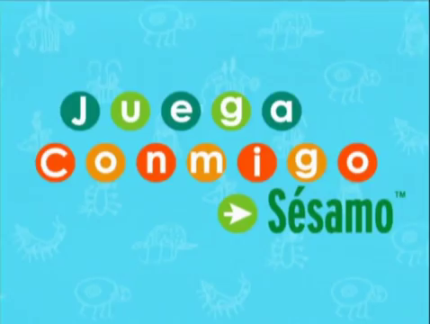

Juega Conmigo Sésamo
(Latin American Spanish)

Title:
Juega Conmigo Sésamo
Seasons Dubbed: 3
Aired on:
Discovery Kids (formerly)
Note: The episodes are
severly shortened.
WATCH
Seasons 1-3
(52 episodes)
archive.org